New concepts (not recolors of v1). If the name/brand means something more specific (CI, streaming, games, etc.), tell me and I’ll aim tighter.
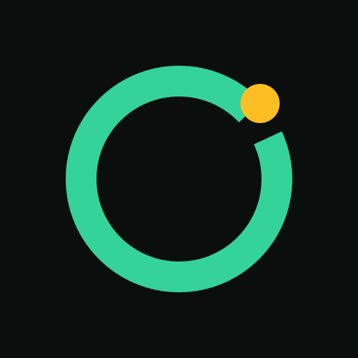
01-live-ringLive ring with gold break — continuous process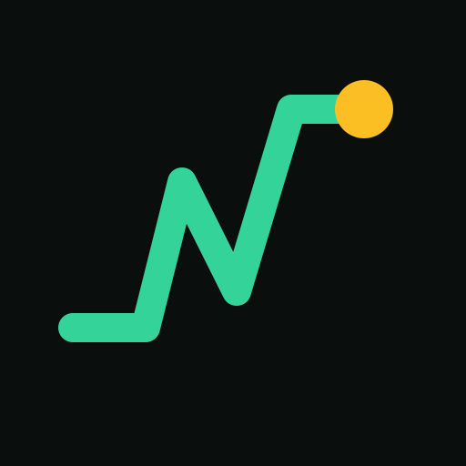
02-signal-riseRising signal that ends live — momentum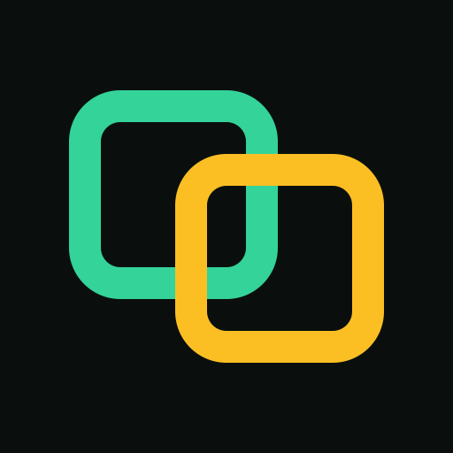
03-unionTwo rounded frames overlapping — live ∩ build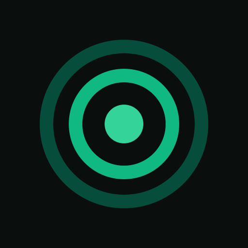
04-pulse-discConcentric pulse — pure live, minimal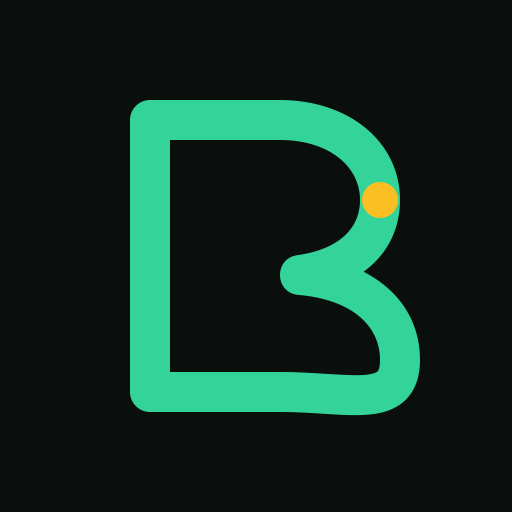
05-path-bStroke-drawn B — monogram without blocks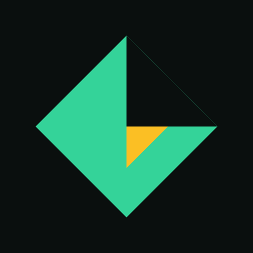
06-split-diamondSplit diamond — half dark half live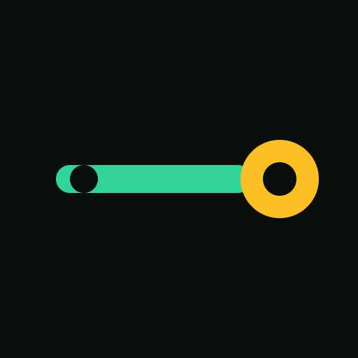
07-beamHorizontal beam into live node — stream/ship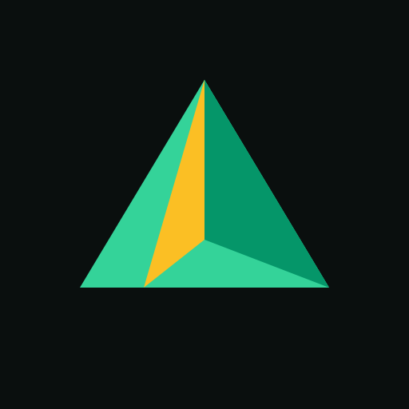
08-foldFolded plane — form taking shape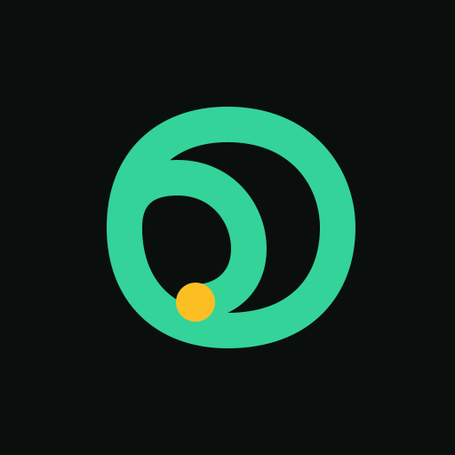
09-loopSpiral loop — continuous delivery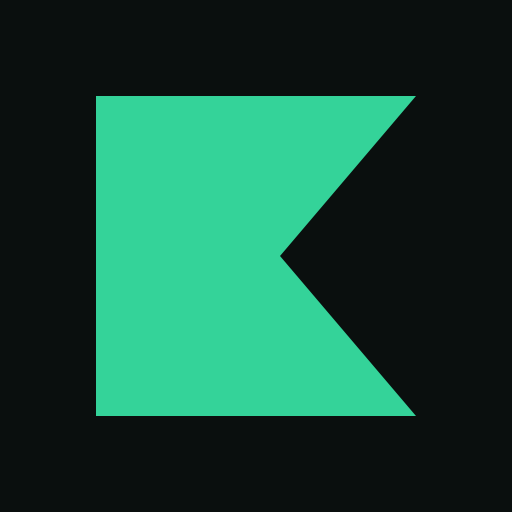
10-notchSolid square with cut — bold mark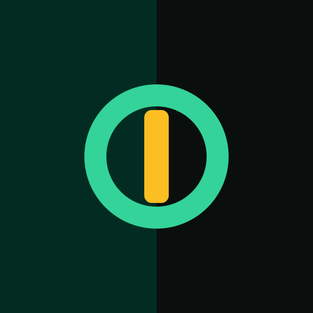
11-split-fieldSplit field + needle — dual wordmark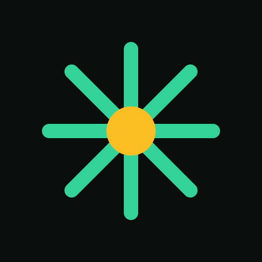
12-burstActivity burst — energy, not flame